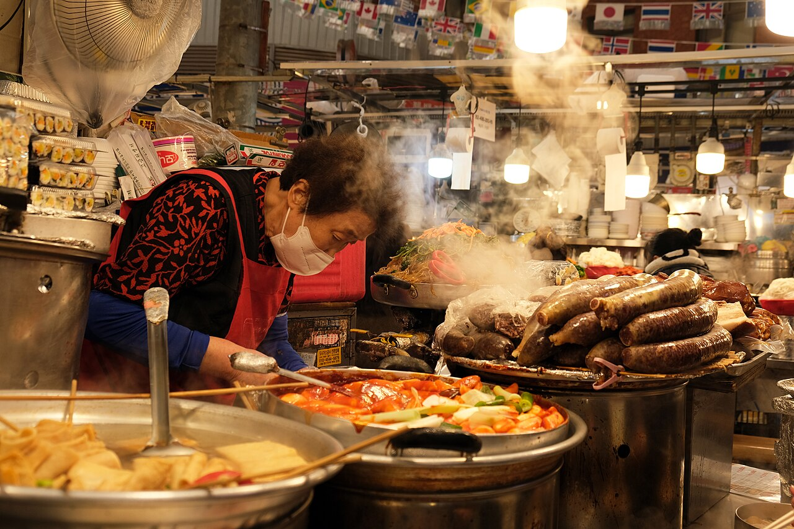
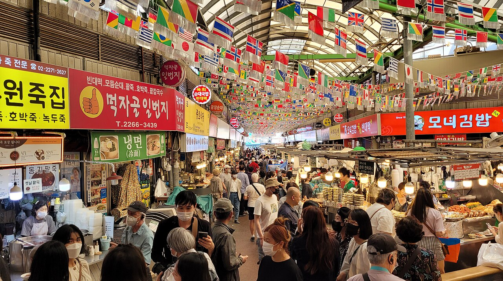
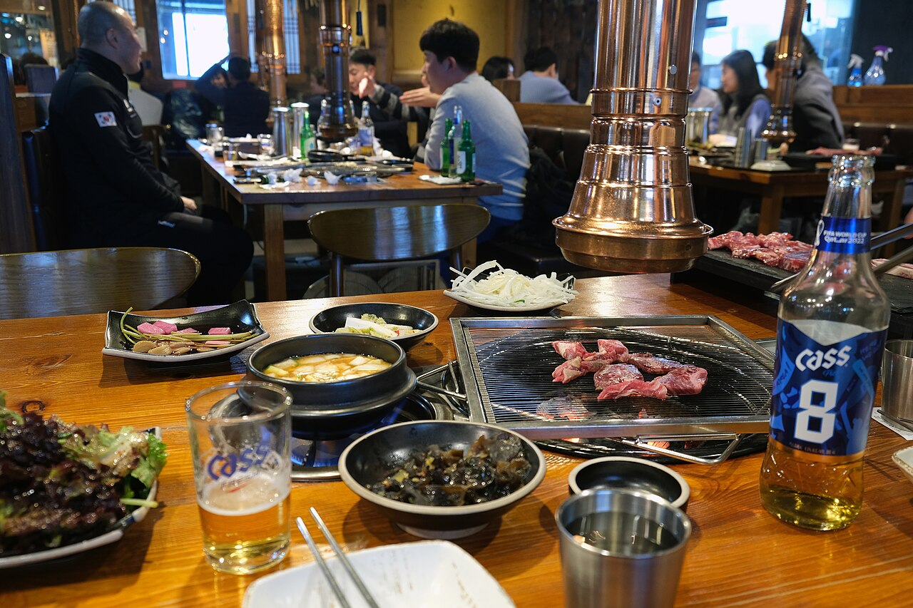
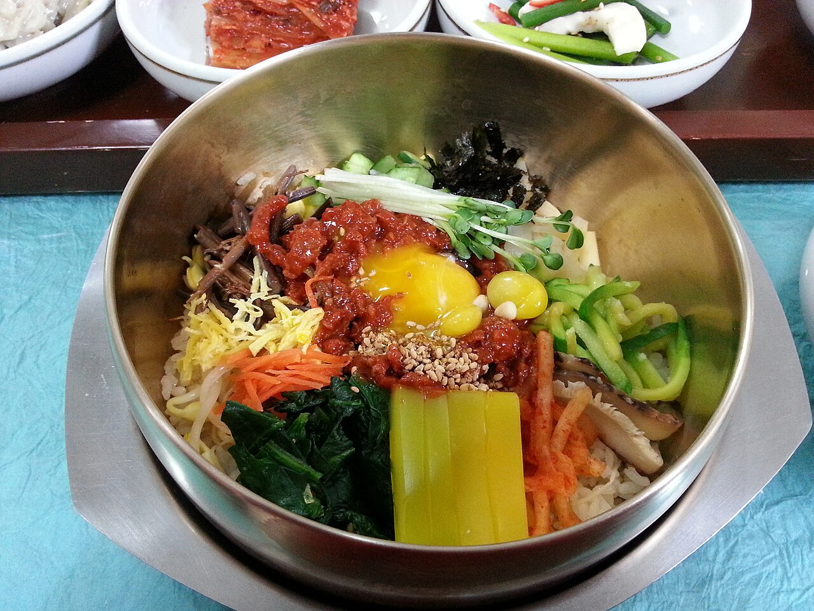
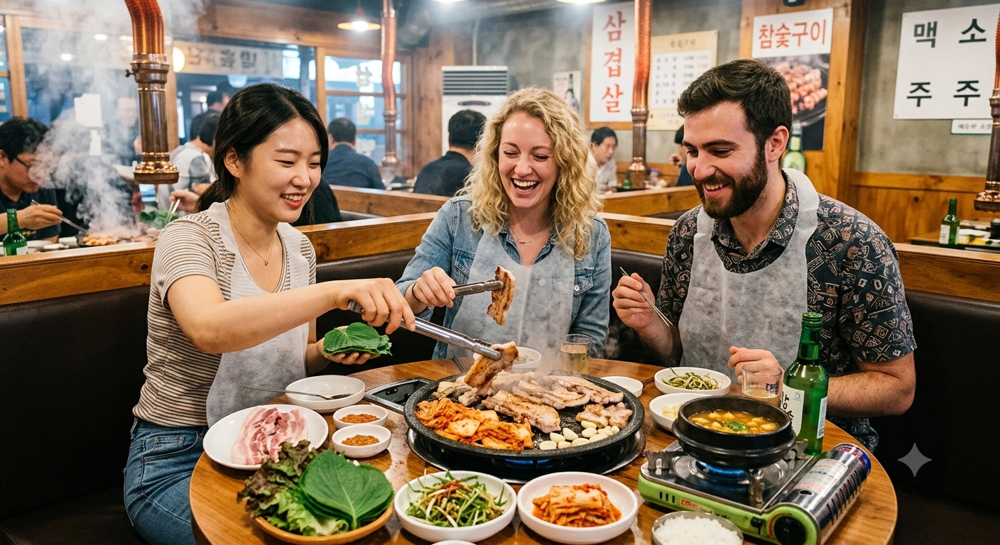
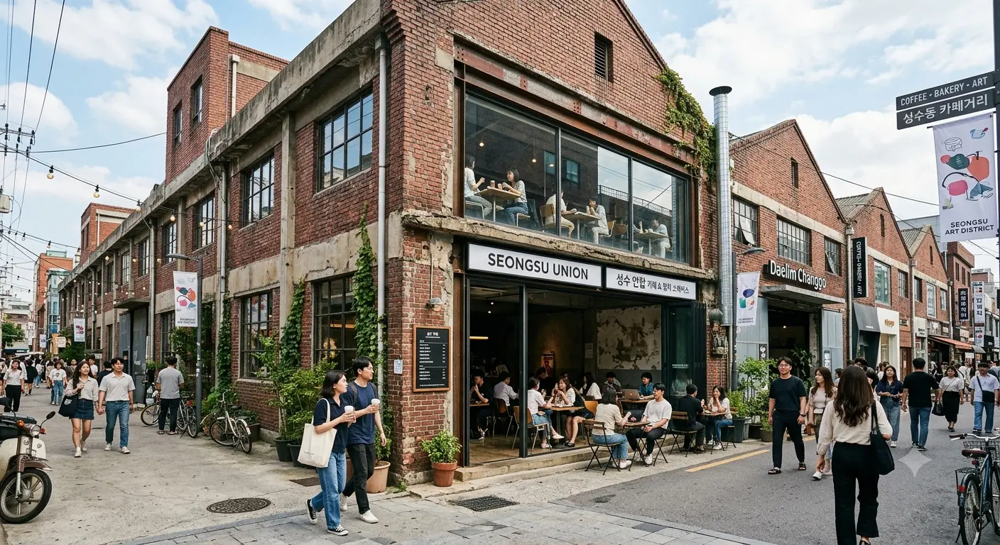
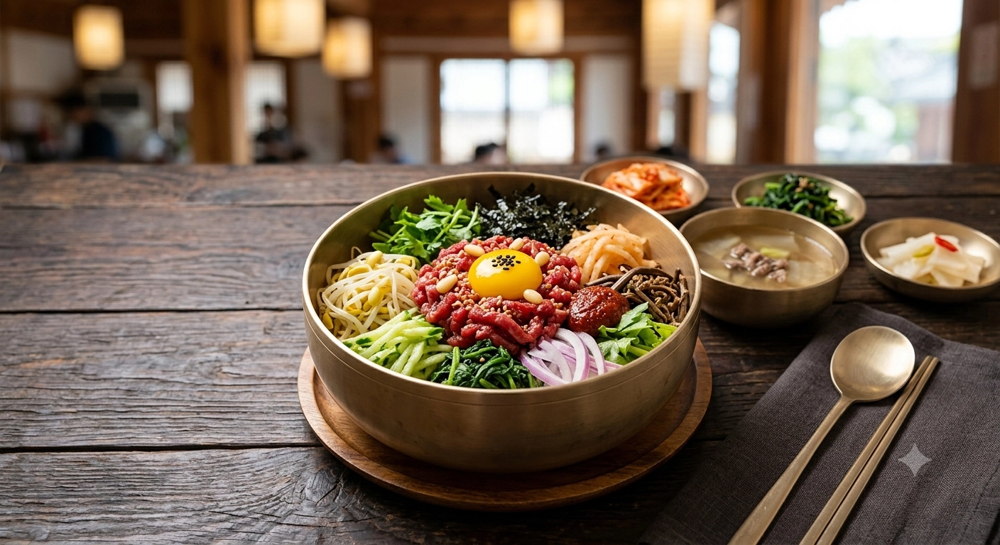
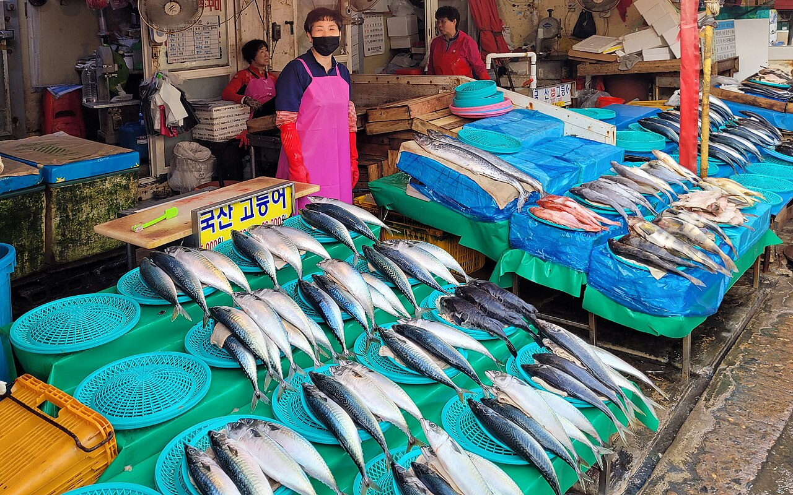
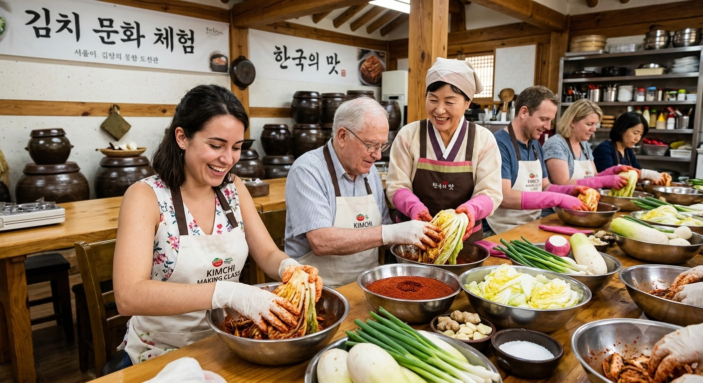

市場與街頭小吃
市場的熱鬧不只來自食物。廣藏、望遠與南大門，各自適合不同安排：集中吃小吃、漫步街區，或把美食穿插在一整天的購物行程裡。
韓國美食與周圍的地方密不可分。熱鬧市場裡的一頓早餐、深夜烤肉、聖水咖啡廳的午後，或海邊的一餐海鮮，都會讓你度過截然不同的一天。
不必追遍每一道名菜。更值得想的是，你想要怎樣的美食體驗，以及它能不能自然融入其他行程。



市場、烤肉、咖啡廳與在地料理，帶來的是很不一樣的一天。有些適合快速停留、感受熱鬧；有些則值得多留點時間，讓街區，甚至另一座城市，也成為體驗的一部分。

市場的熱鬧不只來自食物。廣藏、望遠與南大門，各自適合不同安排：集中吃小吃、漫步街區，或把美食穿插在一整天的購物行程裡。

韓式烤肉通常比匆匆吃一頓晚餐更花時間，也更適合邊吃邊聊。地點會影響晚上的安排：入夜後的麻浦與弘大氣氛不同，乙支路又是另一種首爾市中心的夜晚。

在首爾逛咖啡廳，常常不只是為了咖啡，周邊街道也同樣值得花時間。聖水、延南與益善洞，都有咖啡廳，卻是很不一樣的街區。

當城市也成為一天行程的一部分，在地料理吃起來就有了不同感受。市場、當地人的飲食習慣、傳統街區與生活步調，可能和料理本身一樣令人印象深刻。

當市場、港口或島嶼風景也融入行程，吃海鮮就不只是一餐。釜山與濟州是最明顯的例子，但兩地的旅行方式差異很大。

料理課、市場導覽或美食團，能補上光看菜單不容易理解的背景，尤其適合想認識食材、學習點餐，或了解料理故事的旅客。
同樣一餐，放在熱鬧市場、烤肉桌旁或海邊，感受可以完全不同。以下不替這些場景排名，而是幫你理解它們各自會帶來怎樣的一天。
首爾的傳統市場並不是去哪一個都一樣。廣藏市場人聲鼎沸，攤位集中，美食攤旁就是布料、雜貨與傳統商品。
望遠市場較小，與周邊社區的連結更深，適合放進步調放慢的在地行程，或接著往漢江散步。南大門的範圍大得多，除了吃的，還有服飾、廚房用品、配件與日常採買。
廣藏市場很容易成為當天的重點行程；望遠則讓你有餘裕逛周邊街道，南大門很適合搭配較完整的購物日。熱門用餐時段，走道擁擠、排隊與座位有限都很常見，各攤營業時間與付款方式也不盡相同。
韓式烤肉店通常不只是吃烤肉的地方。許多店裡，一餐會圍著餐桌慢慢展開，搭配蔬菜、醬料、小菜、湯鍋或麵食。有些店讓客人自己烤，有些則由店員代烤。
麻浦帶著日常下班聚餐的氣氛。弘大的晚餐很容易接上酒吧、年輕人群與深夜活動。乙支路有老餐館與狹窄巷弄，江南則通常更精緻，花費也可能更高。
吃烤肉通常不會太匆忙，慢慢吃也是朋友、家庭或情侶聚餐的樂趣。一個人並非不能吃，但最低點餐份量與單人接待規定因店而異，熱門店家也可能需要等候。
聖水把大型咖啡廳、工業建築改造空間、選物店、快閃店與品牌空間聚在一起。延南的尺度較小，更有住宅區氣息，咖啡廳與日常餐館也能順路接到弘大。
益善洞又是另一種氣氛：翻修韓屋、市中心窄巷與咖啡廳，很適合搭配鍾路和首爾歷史街區。聖水的午後常會一路逛到時尚、美妝與設計空間；延南則留有更多慢慢散步的餘裕。
週末可能排很久，社群照片也很少呈現真實的人潮與音量。周邊街道值得一起逛，但不必為了單一咖啡廳決定整趟行程。
傳統韓食可以是正式的多道料理、市場早餐、一碗在地湯品、寺院料理、在地特色料理，或歷史街區裡的一餐。知名菜色清單只能說明其中一部分。
城市補上了更多背景：料理為何在這裡發展、當地人怎麼吃，以及當天還能安排什麼。全州就是很清楚的例子。拌飯或許最有名，但市場、傳統酒飲與韓屋村，讓這一餐有了更完整的場景。
不離開首爾，也能接觸其中一些脈絡。鍾路、仁寺洞與宮殿周邊，結合了傳統茶、韓屋餐廳、市場小吃與韓式餐食。不過，「傳統」或「道地」並不保證餐廳更好，觀光客多的區域尤其如此。
在釜山，吃海鮮可以融入緊湊的市區行程。札嘎其市場、港口活動與南浦洞彼此距離不遠，市場能成為散步的一部分，而不只是吃晚餐的地點。
濟州的行程分布廣得多。黑豬肉、海鮮與島嶼料理散落在濟州市、西歸浦和沿海小聚落，安排用餐時，需要一起考慮較完整的開車與遊覽路線。
釜山讓港口、市場與城市都靠近餐桌；濟州則把美食與海岸、景點之間的公路串起來。海鮮價格會隨種類、重量、季節與烹調方式變動，點餐前值得先確認總價和供餐方式。
市場散步能在開吃前帶你認識食材、攤販與點餐方式。料理課重點在親手做菜與學習技巧。小團美食導覽則以少一些自由安排，換取多站品嚐與沿途解說。
第一次到訪、獨自旅行、帶家人同行，或自己吃完仍有許多疑問時，這些額外說明可能很有幫助。
使用語言、活動時間、團體人數、取消條件與步行距離，都可能大幅影響當天體驗。飲食限制與過敏應在付款前確認，不要只憑菜單或課程名稱判斷。
單靠一道名菜，通常不足以成為多跑一座城市的理由。首爾、釜山、全州與濟州，以不同方式結合飲食、氣氛和景點；兩餐之間怎麼度過，往往才是旅程差異所在。
首爾的強項是選擇多。傳統市場、韓式烤肉、潮流咖啡廳、在地料理餐廳、現代餐飲與宵夜，都能放進同一趟旅行，不必離開市區。
難處在距離。鍾路、聖水、麻浦與弘大並不是一個集中緊湊的美食區；每一餐都為名店橫跨首爾，美食日很容易變成搭車日。
一天大致留在一兩個相連區域，步調會從容許多。鍾路與乙支路結合市場和老首爾市中心；麻浦與弘大能從烤肉一路玩到夜晚；聖水把咖啡廳與品牌串起來；明洞則方便前往市區多處。第一次到訪，這些選擇也讓購物、文化、美妝與夜生活都保有空間。
釜山讓飲食靠近港口、大海與海港城市的步調。海鮮市場、在地湯品、麵食、海灘街區、咖啡廳與夜景，可以放進同一趟旅程，不必把海鮮當成唯一目的。
想逛市場、感受港口氣氛，南浦最明確。海雲台與廣安里把美食接上海灘和夜間散步；西面則有市區交通與深夜餐飲的便利，海岸氣息較少。
釜山範圍不小，反覆往返市場區與海灘區，很快就會累。若海岸也是到訪原因，留一兩晚，比只為吃而匆忙當日來回，更能容納港口、海灘與晚間用餐。
全州並不是縮小版的首爾。它的吸引力，是在比較緊湊的旅程中，結合在地美食、韓屋街道、市場、傳統酒飲與較慢的步調。
拌飯可能是多數旅客最熟悉的名字，但光靠拌飯還不夠。讓飲食、建築、工藝與夜晚氣氛相互搭配，全州之行會更有收穫。
相較於夜生活或無窮無盡的選擇，喜歡在地特色與傳統文化的人，更容易感受到全州的魅力。韓屋村遊客不少，知名菜名也不保證吃到特別的一餐。不過，住一晚就能多留下一個夜晚和清晨，這是匆忙當日往返不容易感受到的。
濟州的美食適合放進較完整的島嶼旅行。黑豬肉、海鮮、在地湯品、市場與咖啡廳，分散在濟州市、西歸浦及沿海各處，並非集中在一個美食街區。
這樣的地理分布很重要。餐廳看起來再好，如果需要大幅繞路、為停車煩惱，或多走一段回頭路，仍可能不是合適的一站。
濟州市方便接上機場與市場，西歸浦適合南部景點，城山與舊左接東岸，涯月或翰林則適合西岸公路與海灘。排隊、停車和有限的大眾運輸，都可能改變一天安排。把餐廳與住宿放進全島路線一起看，通常比圍繞單一名店來選更容易判斷。
最實用的住宿區域，不一定是餐廳最多的地方。更好的線索是：你想吃的餐點、晚上的安排與其他活動，是否一再落在同一街區。
| 區域 | 飲食特色 | 晚間氣氛 | 住宿位置考量 |
|---|---|---|---|
| 鍾路 | 市場、傳統飲食與歷史街區 | 位居市中心，選擇多元 | 鄰近宮殿、廣藏、乙支路與東大門 |
| 麻浦 | 烤肉與在地晚餐 | 自在、貼近日常 | 多晚在此用餐；孔德交通銜接方便 |
| 弘大與延南 | 咖啡廳、日常餐食與深夜活動 | 熱鬧、年輕 | 不只一晚安排宵夜與夜生活 |
| 乙支路 | 老餐館、巷弄與酒吧 | 入夜後別有氣氛 | 多個夜晚在首爾市中心活動 |
| 聖水 | 咖啡廳、品牌與甜點 | 白天較熱鬧 | 多天行程集中在首爾東側 |
| 明洞 | 用餐方便，適合購物途中吃飯 | 以便利為主，在地特色較少 | 首次到訪，想逛多個美食區域 |
鍾路把市場、傳統飲食與歷史街區，聚在首爾市中心同一帶。
廣藏市場、仁寺洞、益善洞、宮殿周邊與老餐飲街，很適合串成兼顧美食與觀光的一天，不必為了彼此無關的停靠點，來回橫跨首爾。
這一區範圍很廣。廣藏與益善洞可能人多、偏觀光，小巷裡卻有另一種較安靜的步調。宮殿、乙支路與東大門，也都能放進同一個較大的活動範圍。
麻浦的重點是烤肉與日常晚餐，而不是密集的知名景點。
麻浦、孔德與附近住商街區，有不少在地餐館和交通連結，又不像弘大總是那麼熱鬧。若你更在意附近能輕鬆吃頓晚餐，而不是一出飯店就是主要景點，麻浦就有吸引力。
白天景點不像鍾路或明洞那麼集中，店家能提供多少英文協助也不一定。若好幾個晚上本來就會在麻浦結束，或孔德的交通能讓其他首爾行程更順，住這裡就更有理由。
弘大與延南，很容易讓咖啡廳和日常用餐一路接到晚上。
弘大充滿活力，以夜生活見長；延南則多了小咖啡廳、餐廳與街區散步。兩者合在一起，一天的安排很自然就會延續到喝酒、聽音樂，或深夜走回飯店。
這份熱鬧也伴隨人潮與噪音，週末尤其明顯。若不只一晚會吃到很晚，房間選在最熱鬧街道外圍，可能比住在正中央舒服。
乙支路把老餐館、酒吧、工業巷弄與新咖啡廳混在一起，晚間氣氛與附近明洞很不同。
印刷與工坊街道的痕跡仍在，這種層層累積的城市樣貌，是它很大一部分的吸引力。比起整齊精緻的觀光街道，這裡更適合老餐館與市中心的夜晚。
巷弄可能不太好辨認，白天和晚上的乙支路也有不同面貌。家庭或首次到訪、希望住宿地點最容易掌握的旅客，可能會覺得附近明洞或鍾路更自在。乙支路的特色，往往要入夜後、多待幾個市中心夜晚才更能感受到。
在聖水，咖啡廳、品牌與設計空間，常常比傳統韓食更能決定一天的安排。
大型咖啡廳、快閃店、美妝、時尚與工業空間改造，讓街區本身和餐食一樣，成為體驗的一部分。
熱門週末，價格與排隊時間都可能增加。只逛一個下午，從首爾其他地區前往並不難；若好幾天都圍繞首爾東側、咖啡廳與品牌空間，這一區在行程裡的份量就大得多。
明洞的強項是方便，而不是鮮明的在地飲食個性。
購物、機場交通與市中心交通，讓你不換飯店也容易前往南大門、乙支路和鍾路。第一次來韓國，美食只是眾多行程的一部分時，這點尤其實用。
明洞本身比麻浦或鍾路更偏觀光，深夜的在地特色也較不鮮明。即使如此，對家庭與首次到訪的旅客來說，若希望方便前往多個美食區，而非一出門就鎖定某種飲食街區，明洞仍是很實用的住宿地點。
單一市場或餐廳，通常不足以決定飯店，尤其是搭地鐵就能輕鬆抵達的地方。當同一街區在好幾個晚上或多天行程反覆出現，或行程需要很早出門、很晚結束、回程不順時，住得近才更有幫助。
即使如此，區域名稱也只是判斷的一部分。客房大小、取消條件，以及從車站步行到飯店的路程，仍會影響住宿體驗。
把美食排進行程時，這幾個問題經常出現。
逛一座傳統市場，再安排一頓從容的坐下用餐，是很好的入門，因為兩者呈現韓國飲食截然不同的面貌。市場選擇多、氣氛熱鬧；烤肉或在地料理則讓你有更多時間圍坐餐桌。第一次去，不必把每一道名菜都排進行程。
首爾的選擇最多；釜山讓美食靠近港口與海岸；全州把在地料理與傳統文化連在一起；濟州則適合把飲食放進較完整的環島行程。哪座城市合適，不只看你想吃什麼，也要看兩餐之間想做什麼。
值得，尤其是想在第一次逛市場時，感受熱鬧又具代表性的場景。望遠更貼近周邊社區；若當天也要購物，南大門則更順。廣藏值得一看，但不必是整趟旅行唯一逛的市場。
有些店可以。單人座位與最低點餐規定因店而異，出發前最好確認店家目前的做法。若烤肉店主要接待多人同行，午餐、套餐餐廳、市場或有導覽的美食體驗，也可能比較容易安排。
鍾路適合市場與傳統首爾，麻浦適合以烤肉為主的夜晚，弘大與延南適合咖啡廳和深夜活動，明洞則方便第一次到訪。當美食街區也符合其他白天行程，住在附近最有幫助。
一日遊能看主要景點、吃一兩餐，但住一晚能多留下一個步調較慢的夜晚與清晨。若在地料理、韓屋村與傳統氣氛是此行重點，這些額外時間就更有價值。
可能值得，尤其是你希望比自己用餐獲得更多解說。料理課重在親手操作，市場散步幫助理解食材與點餐，美食導覽則讓你比較容易走訪多個地方，同時聽到背後的故事。
需要。食譜、醬料與料理方式各有差異，有過敏、素食或宗教飲食需求，應在預訂課程或點餐前清楚確認。不要只憑料理名稱或外觀，就認定適合食用。
好的美食旅行，也留得下空間認識韓國其他面貌。不必每餐都是名店或事先訂位；市場、街區、飯後的氣氛，以及臨時走進的一間餐廳，都能成為旅程的一部分。
令人記住的一餐，往往屬於一整天的經歷，而不只是一張菜色清單。